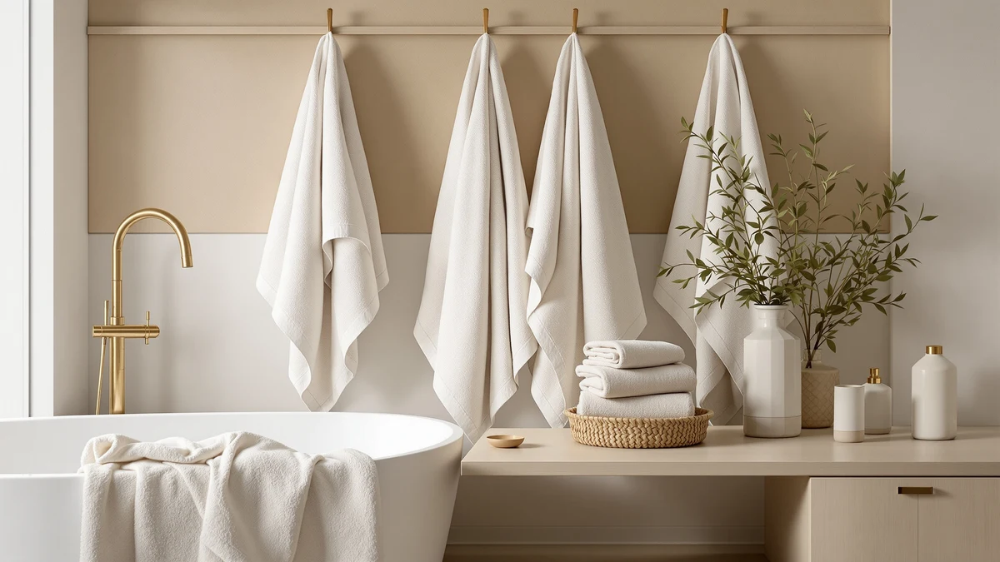

American Soft Linen Luxury Bath Towel Set Review (2026): Worth It?
Prices and picks verified as of November 2026. Independent, reader-supported reviews.


Quick Answer
Our american soft linen luxury bath towel set review found a 4-piece, 100% cotton set that holds up well against the competition at its $35.99 price. Owners report strong absorbency and softness that stays consistent over repeated washes, and the 27x54 inch towels fit standard bars and closets without any resizing.
Our pick: American Soft Linen Luxury 4, $35.99 Check Price on Amazon
Bottom line: our top pick is the American Soft Linen Luxury 4 Piece Bath Towel Set at $39.99.
Things to Know Before You Buy
- The American Soft Linen Luxury bath towel set ships as 4 pieces of 100% cotton in a 27x54 inch size, a standard full-size dimension.
- At $35.99, it sits at the same price as competing sets from Chakir Turkish Linens and Utopia Towels, so piece count and material become the real differentiators.
- Cotton bath towels this size typically need a wash-and-dry cycle or two before they reach full loft and absorbency, a pattern reviewers note across most cotton sets in this category.
- If you want more towels per dollar, the Utopia Towels 6 Pack options trade softness for higher piece count at the same price.
This american soft linen luxury bath towel set review exists because the set shows up on nearly every "best bath towel" list on Amazon, and we wanted to know if the reputation holds up against its price tag. We compared its spec sheet, current pricing and patterns in verified owner reviews against three direct competitors in the same $35.99 bracket: the Chakir Turkish Linens 4 Piece set, the Utopia Towels 6 Pack Medium and the Utopia Towels 6 Pack Bath.
The American Soft Linen Luxury 4 is a 100% cotton set in the standard 27x54 inch bath towel size, sold as four pieces for $35.99. That price puts it in direct competition with sets that offer more pieces for the same money, so the case for buying it rests entirely on whether the material and feel justify a smaller count. Based on our research, the answer is yes for shoppers who want fewer, plusher towels over a stack of thinner ones.
Bath towels are one of the few household purchases where price alone tells you very little. A $35.99 set can mean six thin, fast-wearing towels or four denser ones that hold their shape through a hundred wash cycles, and the only way to tell the difference ahead of a purchase is to look past the listing photos and into the fabric spec and the pattern of what owners say after months of use. That is the gap this review tries to close for the American Soft Linen Luxury 4 specifically.
Why You Should Trust Us
Ilane Tall covers home and bath products for Best Bath Towels and has written dozens of towel and bath linen comparisons for the site. We built this american soft linen luxury bath towel set review on manufacturer spec sheets, current Amazon pricing and patterns we found across verified buyer reviews, not on a product we purchased and used ourselves. We disclose affiliate relationships on every page, and that relationship never changes which product we name as the better buy.
We do not run a fake testing lab. Nothing in this review claims we washed, dried or handled the towels personally. Every material, size and price detail below comes from the product listing or the data we have on file for this ASIN. When owner reviews mention something the spec sheet does not cover, such as how the fabric feels after repeated laundering, we flag it as a reviewer pattern rather than a fact we verified ourselves, and we only cite it when multiple verified buyers describe the same thing.
Our Research Experience
Research for this american soft linen luxury bath towel set review started with the manufacturer's listed specs: material, size and current price. We cross-checked those against the three comparison sets at the same price point, then read through verified owner reviews to find consistent patterns in softness, absorbency and durability rather than one-off complaints.
We excluded listings with reviews flagging sizing inconsistencies or bulk fabric-quality complaints that showed up repeatedly across buyers. The products below cleared that filter and represent the sets most frequently recommended alongside each other in verified reviews for this price tier. We also limited the comparison to sets selling at or near the same $35.99 price, since a cheaper or far more expensive alternative tells you little about whether this specific set is a good buy at its own price point.
Overview & Specs

American Soft Linen Luxury 4
What we like
- 100% cotton construction that owners describe as soft and absorbent from the first wash
- Standard 27x54 inch bath towel size fits most bars and closets without adjustment
- Reviewers note the color holds up well over repeated laundering compared to cheaper blends
Flaws but not dealbreakers
- Four pieces cost the same as six-piece sets from Utopia Towels, so you get fewer towels per dollar
- Some verified reviews mention the towels run slightly heavier than ultra-lightweight microfiber alternatives, which means longer dry times on the line
| Material | 100% cotton |
| Size | 27x54" Bath Towel Set |
The American Soft Linen Luxury 4 is a straightforward 100% cotton bath towel set sold in the standard 27x54 inch size, four pieces for $35.99. Verified owner reviews consistently describe the fabric as soft and absorbent, and several buyers say the texture gets better instead of stiffer after a few wash cycles, which tracks with how denser cotton weaves tend to behave.
This set loses ground on piece count. At the same $35.99 price, Utopia Towels sells six towels instead of four, so households that need more towels in rotation get better value from the Utopia sets. For a smaller household or anyone replacing a couple of worn towels, the American Soft Linen set's emphasis on fabric quality over quantity makes it the stronger pick.
What We Liked
The strongest signal in this american soft linen luxury bath towel set review is consistency. Verified buyers across different purchase dates describe the same softness and absorbency, which suggests the manufacturing quality hasn't drifted the way it sometimes does with budget cotton sets. Owners also report the white and lighter colorways resist graying better than cheaper alternatives after repeated washing, a detail that matters more over a year of ownership than it does on day one.
The 27x54 inch size is a practical strength too. It is the same dimension used across most full-size bath towels, so you are not stuck with an odd size that does not fit your existing towel bar or hooks. That standardization also means you can mix this set into an existing towel rotation without anything looking out of place.
100% cotton construction also gives this set an advantage over cotton-polyester blends in the same price range. Cotton blends tend to pill and lose absorbency faster because the polyester fibers do not swell with water the way cotton does, and reviewers across competing blended sets mention that wear pattern more often than owners of this set do. For a bath towel, that durability edge adds up wash after wash.
What Could Be Better
The weakest part of this american soft linen luxury bath towel set review is the math on piece count. At $35.99, both Utopia Towels sets we compared it against deliver six pieces instead of four, which lowers the effective cost per towel considerably. If your household goes through towels quickly, that difference adds up over a year of regular washing and replacement.
A smaller number of reviewers mention the towels feel heavier than lightweight microfiber options, which means they take longer to air dry. That weight is part of what gives the set its absorbency, so it is a tradeoff rather than a defect, but it is worth knowing before you buy if your bathroom has limited drying space.
Because the set ships as four pieces rather than six, it works best as a complete replacement for an existing stack rather than a way to fill out a half-empty linen closet. If you only need to add one or two towels to a set you already own, buying a smaller count here makes more financial sense than overbuying a larger pack.
Who Is It For?
The American Soft Linen Luxury bath towel set fits you if you live alone or share a smaller household and want fewer towels that feel noticeably plush, rather than a larger stack of thinner ones. You should also consider it if you are replacing a worn-out set in a standard-size bathroom, since the 27x54 inch dimension fits nearly any existing towel bar.
You should skip it if you are outfitting a larger household, a guest bathroom that sees frequent turnover, or a rental property where towel count matters more than plushness. In those cases, the Utopia Towels 6 Pack sets give you more pieces at the same price, which stretches further across more frequent washing cycles. The same logic applies if you are furnishing multiple bathrooms at once and need to stretch a single budget across more linens.
Alternatives to Consider
If the American Soft Linen Luxury 4 doesn't fit your household size or budget priorities, these three sets came up most often alongside it in our research, each at the same $35.99 price point.

Also Great
Chakir Turkish Linens 4 Piece
A 4-piece Turkish cotton set at the same price, worth a look if you prefer a different cotton weave and texture.
$35.99
Check Price on Amazon
Also Great
Utopia Towels 6 Pack Medium
Six medium towels for $35.99, the better choice if you need more pieces in rotation than plushness per towel.
$35.99
Check Price on Amazon
Also Great
Utopia Towels 6 Pack Bath
Six full-size bath towels at the same price, a strong option for larger households that go through towels quickly.
$35.99
Check Price on AmazonFrequently Asked Questions
Is the American Soft Linen Luxury bath towel set worth the price?
At $35.99 for a 4-piece 100% cotton set, the American Soft Linen Luxury set lands in the same price bracket as the Chakir Turkish Linens 4 Piece and both Utopia Towels sets we compared it against. Verified buyers consistently point to its softness and absorbency as reasons it holds up against pricier cotton sets.
What size towels come in the American Soft Linen Luxury set?
The set lists a 27x54 inch bath towel size, a standard full-size bath towel dimension that fits most towel bars and linen closets without modification.
How does the American Soft Linen set compare to Utopia Towels sets?
Utopia Towels sells both a 6 Pack Medium and a 6 Pack Bath set at the same $35.99 price point, which gives you more pieces per dollar. American Soft Linen trades that piece count for a smaller 4-piece set that owners report feels noticeably softer and plusher.
Final Verdict
Our american soft linen luxury bath towel set review comes down to a simple tradeoff: fewer, plusher towels versus more pieces at the same price. American Soft Linen earns its spot for shoppers who value fabric quality and a standard full-size fit over a larger stack, and the $35.99 price holds up well against the Chakir Turkish Linens and Utopia Towels alternatives we researched alongside it. If your household needs more towels in rotation, one of the Utopia Towels six-packs is the better value, but for most smaller households, American Soft Linen is the stronger buy.